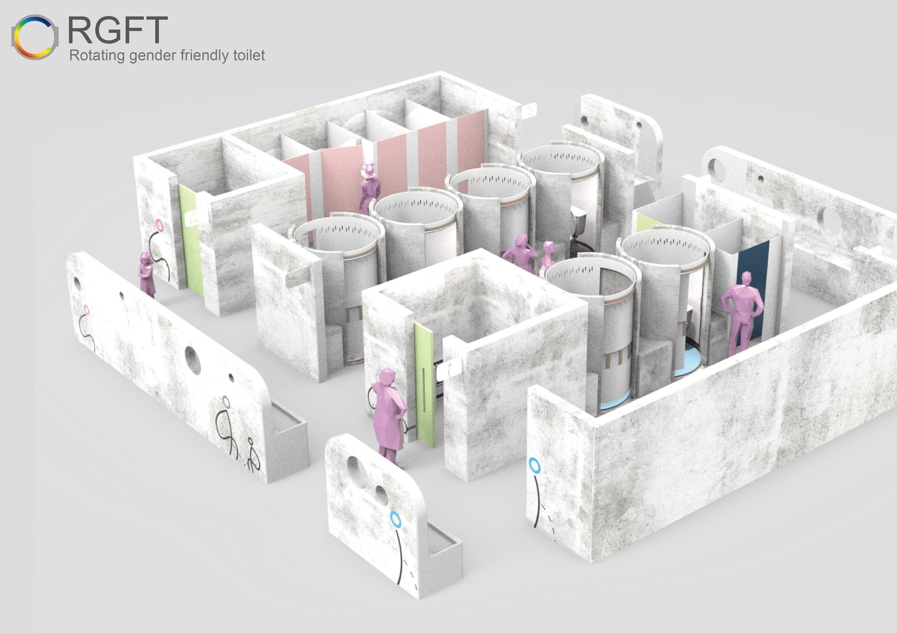

PHASE 01
衛生底線重建
短期 · 3-6 個月
建立「敢進來、願意再來」的環境基準。
排水管線清淤、截油槽定期清洗
二樓生鮮區地板防滑與沖洗系統升級
廁所全面翻修、加強通風（RGFT 模組）
定期病媒防治機制（鼠患／蟑螂）
內側攤位採光與基礎照明強化
PLUMBING · 管線重建
排水主幹、截油槽、廢水管全面汰換

RESTROOM · 多元友善廁所
RGFT 模組翻新並強化通風
SHUI-YUAN · SDG · 2026
10
/ 17